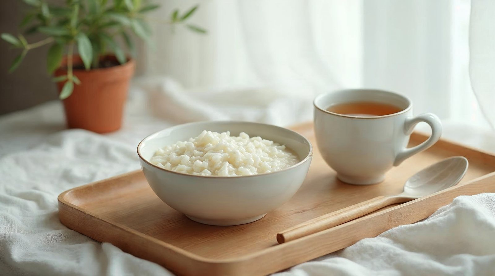
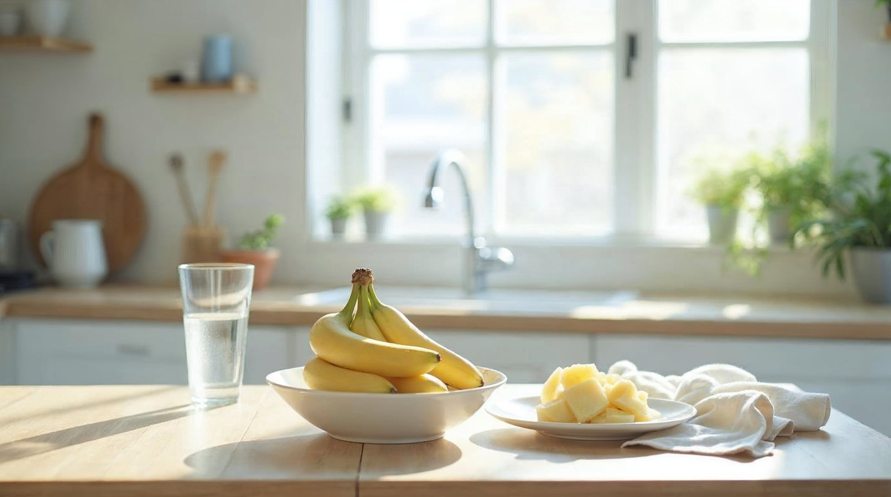
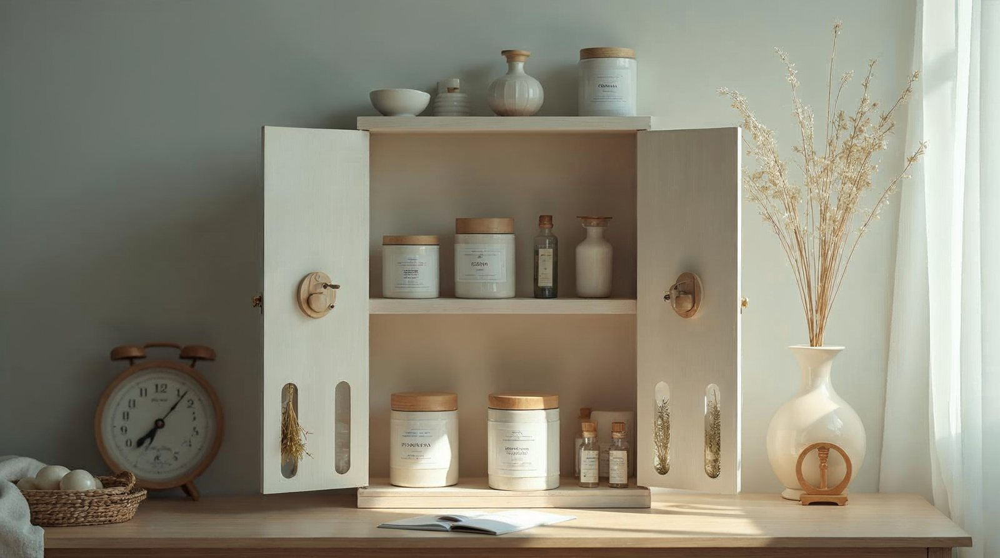

이종호 한의사 감수좋은꿈참사랑한의원 대표원장 (한의사 면허번호 19769)발행 2026-11-26 · 수정 2026-11-27
이 글의 차례
출근길 지하철이 한강 다리를 건널 즈음, 아랫배가 꾸르륵 뒤틀리기 시작합니다. 다음 역에서 내릴까, 조금만 더 버틸까. 이마에 식은땀이 맺히죠. 그래서 요즘은 아예 집을 나서기 전 화장실을 두 번 들르고, 낯선 곳에 가면 화장실 위치부터 찾게 되신다고들 해요.
진료실에서 이런 말씀을 자주 들어요. 검사하면 다 괜찮다는데 왜 이렇게 불편하냐고요. 스트레스 때문이라는 말을 들으면 마음이 약해서 그런가 싶어 더 위축된다는 분도 계세요.
먼저 이 말씀부터 드릴게요. 장이 예민한 건 마음이 약해서가 아니에요. 원래 그런 몸이 있는 거예요. 중요한 날마다 배가 먼저 반응하는 몸으로 시험을 치르고, 회의에 들어가고, 아이를 등원시키며 하루를 해내 오신 거잖아요. 그동안 얼마나 신경 쓰며 지내셨을까 싶어요.
배가 자주 아프고 설사와 변비가 번갈아 오는데 검사에서는 큰 이상이 없다고 들었다면 과민성 장 증후군일 가능성이 있어요. 여기서 두 가지를 나눠 보셔야 해요. '검사에 이상이 없다'는 것과 '불편하지 않다'는 건 다른 얘기거든요. 그래서 저는 배만 보지 않고, 설사형인지 변비형인지 섞인 형인지 나눈 뒤 긴장과 잠, 음식, 배변을 함께 살펴요.
다만 대변에 피가 섞이거나, 이유 없이 체중이 빠지거나, 자다가 설사 때문에 깨거나, 50세가 넘어 처음 배변 습관이 바뀌었다면 과민성 장으로 넘기지 마세요. 그때는 내과에서 대장 검사를 먼저 받으셔야 해요.
왜 긴장하면 배부터 아플까요
장은 뇌와 가장 많이 이야기를 주고받는 장기 가운데 하나입니다. 장벽에는 신경이 촘촘하게 퍼져 있어 '제2의 뇌'라고 부르기도 하지요. 기분을 다루는 데 관여하는 세로토닌도 상당 부분이 장에서 만들어진다고 알려져 있습니다.
그래서 마음이 조이면 장이 먼저 반응하고, 장이 불편하면 마음도 가라앉습니다. 발표를 앞두고 배가 아픈 것, 장이 며칠 불편하면 괜히 기운이 빠지고 우울해지는 것은 둘이 이렇게 이어져 있기 때문입니다.
과민성 장 증후군은 장의 생김새에는 큰 이상이 없는데, 장이 움직이는 속도와 감각이 예민해진 상태로 이해하시면 됩니다. 같은 양의 가스나 같은 음식에도 남보다 더 크게 아프게 느끼고, 장이 너무 빨리 움직이면 설사로, 너무 느리면 변비로 드러납니다.
장염을 심하게 앓은 뒤부터 시작되었다는 분, 항생제를 오래 먹은 뒤부터라는 분도 있습니다. 장 속 환경이 한 번 크게 흔들린 뒤 예민함이 오래 남는 경우입니다. 그래서 언제부터 시작되었는지도 꼭 여쭙습니다.
과민성 장은 생명을 위협하는 병은 아니지만, 삶의 반경을 좁히는 병입니다. 약속을 미루고, 먼 길을 피하고, 먹고 싶은 것을 참게 만들지요. 그래서 저는 숫자로 드러나지 않는 이 불편을 가볍게 여기지 않으려 합니다.
한의학에서는 이런 상태를 장만의 문제로 보지 않았습니다. 마음의 긴장이 소화를 누르는 경우, 속이 차서 아랫배가 쉽게 꾸르륵거리는 경우, 기운이 처져 장이 힘없이 움직이는 경우를 나누어 보았습니다. 저는 이 구분을 생활의 어디부터 손볼지 정하는 데 씁니다.
설사형·변비형·혼합형, 나누어 봅니다
과민성 장 증후군은 흔히 지난 석 달 동안 한 주에 하루 이상 배가 아프고, 그 통증이 배변과 관련이 있거나 배변 횟수나 대변 모양이 바뀌는 경우로 설명합니다. 그리고 대변의 모양에 따라 세 갈래로 나눕니다.
- 설사형: 묽거나 물 같은 변이 잦고, 급하게 화장실을 찾는 일이 많습니다.
- 변비형: 단단하고 덩어리진 변, 시원하지 않은 느낌, 배에 가스가 차는 일이 많습니다.
- 혼합형: 며칠은 변비, 며칠은 설사가 번갈아 오고 어느 쪽인지 스스로도 헷갈립니다.
대변 모양을 말로 설명하기 어려우시면 '브리스톨 대변 척도'라는 그림표를 떠올리시면 됩니다. 토끼 똥처럼 딱딱한 1번부터 물 같은 7번까지 일곱 칸으로 나눈 것입니다. 진료실에서는 "요즘 몇 번 쪽이 많으세요?" 하고 여쭙니다.
비슷해 보여도 다른 병일 수 있습니다. 식후 명치가 더부룩하고 트림이 잦다면 위 쪽에 가깝고, 식사 뒤에 속이 더부룩한 것은 무엇 때문이고, 속쓰림과는 어떻게 다른가요?를 함께 보셔도 좋습니다. 우유를 마실 때만 설사한다면 유당을 잘 소화하지 못하는 경우일 수 있습니다.
혈변이나 체중 감소, 밤중 설사가 있다면 염증성 장질환이나 대장 질환을 먼저 가려야 합니다. 갑상선 기능이나 일부 약 때문에 배변이 바뀌기도 합니다. 그래서 과민성 장이라는 이름은 다른 병을 먼저 살핀 뒤에 붙이는 이름이라고 말씀드립니다.
먼저 이렇게 여쭙니다
화장실 이야기는 누구나 꺼내기 어렵습니다. 그래도 진료실에서는 편하게 말씀해 주세요. 아래 질문을 떠올려 오시면 이야기가 한결 쉽습니다.
- 대변은 하루 몇 번, 며칠에 한 번인가요? 모양은 묽은 쪽인가요, 단단한 쪽인가요?
- 배는 어디가 어떻게 아프고, 대변을 보고 나면 덜해지나요?
- 어떤 날 더 심한가요? 맵거나 기름진 음식, 찬 음료, 술, 마음 쓰이는 일 가운데 무엇과 겹치나요?
- 설사하기 전에 배가 차가워지거나 꾸르륵거리는 느낌이 있나요?
- 밤에는 잘 주무시나요? 요즘 기분은 어떠신가요?
- 대변에 피나 검은 변이 보인 적, 이유 없이 체중이 빠진 적이 있나요?

긴장과 장, 그 사이를 살핍니다
진료실에서 지켜보면 과민성 장으로 오시는 분은 대개 성실합니다. 해야 할 일을 그날 안에 끝내야 마음이 놓이고, 내일 일이 남아 있으면 오늘 밤 잠들기 전까지 마음속으로 정리를 끝내려 합니다. 그 성실함이 몸에서는 늘 조금씩 힘을 주고 있는 상태로 남습니다.
마음 쓰이는 일이 있는 주에 설사가 잦아진다면 저는 장보다 그 한 주를 먼저 봅니다. 그 주에 몇 시에 잠들었는지, 끼니를 거르지는 않았는지, 숨을 깊게 쉬어 본 적이 있는지 여쭙지요. 음식은 그대로인데 배만 달라졌다면 답은 대개 그 주의 하루 안에 있습니다.
반대로 맵고 짠 음식을 먹은 다음 날만 탈이 난다면 음식 쪽에 무게를 둡니다. 둘이 겹치는 날 가장 크게 탈이 나는 분도 많습니다. 기록이 필요한 이유입니다.
여성분 가운데는 생리 전후로 배변이 달라진다는 분이 많습니다. 생리 직전에는 변비가, 생리가 시작되면 묽은 변이 잦아지는 식입니다. 호르몬의 변화가 장의 움직임에도 영향을 준다고 알려져 있으니, 기록할 때 생리 주기를 함께 적어 두시면 흐름이 더 잘 보입니다.
여행이나 출장처럼 잠자리와 화장실이 바뀌는 날에 탈이 나는 분도 있습니다. 익숙하지 않은 곳에서 몸이 긴장하면 장도 함께 굳거나 서두릅니다. 그런 날은 평소보다 끼니를 가볍게 하고, 아침에 화장실에 앉을 시간을 넉넉히 두는 것만으로도 마음이 한결 놓입니다.
시험이나 마감 같은 큰일을 앞둔 분이라면 시험 스트레스로 변비나 속 쓰림이 올 때는 무엇을 살피나요?에 그 시기를 지나는 방법을 따로 적어 두었습니다.
일상에서 먼저 해 볼 수 있는 것
장은 리듬을 좋아합니다. 같은 시각에 먹고, 같은 시각에 자고, 같은 시각에 화장실에 앉는 것만으로도 덜 놀라는 경우가 많습니다.
- 세 끼를 비슷한 시각에, 천천히 꼭꼭 씹어 먹기
- 아침 식사 뒤 10분쯤 서두르지 않고 화장실에 앉아 보는 시간 만들기
- 찬 음료와 얼음, 술, 아주 맵거나 기름진 음식은 횟수부터 줄이기
- 설사형은 커피·탄산을 줄이고, 변비형은 물과 채소를 조금씩 늘리기
- 배꼽 주변을 손바닥으로 따뜻하게 덮고 시계 방향으로 천천히 쓸어 주기
- 하루 20~30분 가볍게 걷고, 잠드는 시각을 일정하게 맞추기
배가 차다고 느끼는 분이라면 얇은 복대나 따뜻한 물주머니로 배를 덮어 보셔도 좋습니다. 다만 너무 뜨거운 찜질을 오래 대면 화상이 생길 수 있으니 따뜻한 정도에서 멈추세요. 당뇨가 있거나 배·손발의 감각이 둔한 분, 찜질한 채 잠들기 쉬운 분은 뜨거움을 늦게 알아채 저온 화상이 생기기 쉬우니 짧게만 쓰시고 피부를 자주 확인하세요.
찬 음식에 유독 탈이 나신다면 찬 음식이나 찬 음료를 먹으면 배가 아플 때는 어떻게 하나요?도 함께 보세요.
특정 음식을 한꺼번에 많이 끊는 식단은 영양이 치우치기 쉽습니다. 장에서 발효가 잘되는 일부 탄수화물을 줄이는 식단도 알려져 있지만, 오래 할 일은 아니어서 의료진과 상의하며 짧게 해 보는 편이 안전합니다. 기록을 보고 나에게 걸리는 음식 한두 가지를 찾는 것이 먼저입니다.
한꺼번에 다 바꾸려 하지 마세요. 저는 큰 목표를 잘 드리지 않습니다. 아침 화장실 시간 하나만 몸에 붙여 보시고, 익숙해지면 하나씩 더해 가시면 됩니다.
잠과 장은 서로 기대어 있습니다
과민성 장으로 오신 분께 저는 잠을 꼭 여쭙습니다. 잠이 괜찮다면 머리 쪽 긴장은 비교적 덜하다고 보고 장 자체에 더 무게를 둡니다. 반대로 잠까지 얕아졌다면 장과 마음을 함께 살펴야 할 때가 많습니다.
늦게 잠든 다음 날 아침에 유독 급하게 화장실을 찾는다는 분도 있습니다. 밤사이 쉬지 못한 몸이 아침에 장을 먼저 재촉하는 셈이지요. 그래서 아침 배가 유독 급한 분께는 잠드는 시각부터 한 시간 앞당겨 보시라고 권합니다.

예를 들면 이런 경우입니다
실제 어느 분의 사연이 아니라, 진료실에서 자주 보는 모습을 바탕으로 그려 본 장면입니다.
예를 들어 평소에는 이틀에 한 번 괜찮은 변을 보다가, 마음 쓰이는 일이 생긴 주에만 설사가 잦아지는 경우가 있습니다. 이럴 때는 음식보다 그 주의 잠과 긴장을 먼저 적어 보시라고 말씀드립니다.
아침마다 배가 아파 출근 전 화장실을 여러 번 가고, 찬 음료를 마신 날 더 심한 경우도 있습니다. 배를 손으로 살펴 찬지 따뜻한지 보고, 아침 식사 시각과 화장실에 앉는 시간을 함께 정해 봅니다.
며칠 변을 못 보다가 한꺼번에 묽게 쏟아지는 혼합형인데, 변비약을 먹은 날과 안 먹은 날이 뒤섞여 어느 쪽이 먼저인지 헷갈리는 경우도 있습니다. 이럴 때는 약 먹은 날을 따로 표시해 두면 흐름이 보이기 시작합니다.

한의원에서 함께 살필 수 있는 경우
- 대장 검사 등에서 큰 이상은 없다고 들었지만 배 아픔과 설사·변비가 이어지는 경우
- 마음 쓰이는 일이 있을 때마다 배가 먼저 탈이 나는 경우
- 배가 차고 꾸르륵거리며, 찬 음식에 유독 약한 경우
- 장이 불편한 날이 이어지며 잠과 기분까지 가라앉는 경우
좋은꿈참사랑한의원에 처음 오시면 배 아픔과 대변 모양이 언제부터, 어떤 날 달라지는지 먼저 듣고 아래 위험 신호가 없는지부터 확인합니다. 받으신 내시경이나 혈액 검사 결과, 드시는 약이 있다면 가져와 주세요.
그다음 양손을 올려 달라고 말씀드립니다. 저는 처음 오신 분이든 다시 오신 분이든 모든 분께 맥을 짚습니다. 맥을 짚는 동안 잠과 식사, 몸이 찬지 더운지, 요즘 마음 쓰이는 일을 여쭙고 혀도 봅니다.
이어서 배를 손으로 살핍니다. 어디가 단단한지, 어디를 누르면 불편한지, 배가 찬지 따뜻한지 봅니다. 이렇게 살핀 내용을 바탕으로 침, 배를 따뜻하게 하는 온열 물리치료, 한약 상담 가운데 지금 상태에 맞는 방법을 함께 정합니다.
치료 중에는 불편하시면 바로 말씀해 주세요. 내과 검사가 먼저라고 판단되면 왜 그런지 말씀드리고 안내합니다. 다시 오시면 지난번 이후 설사나 변비가 있던 날과 그날 무슨 일이 있었는지부터 이어서 여쭙습니다.
이렇게 기록해 오시면 상담이 쉬워집니다
장은 진료실에 오는 날에는 얌전한 경우가 많아요. 원래 그래요. 그래서 2~4주 동안 한 줄씩 남긴 기록이 큰 힘이 되거든요.
- 날짜, 대변 횟수와 모양(브리스톨 1~7번 가운데 몇 번인지)
- 배가 아팠던 시각과 자리, 대변을 본 뒤 덜해졌는지
- 그날 먹은 것 가운데 맵거나 기름진 것, 찬 것, 술, 우유
- 전날 잠든 시각, 그날 마음의 긴장(낮음·보통·높음)
- 생리 주기(해당되는 분), 드신 약이나 지사제·변비약
빠진 날이 있어도 괜찮아요. 몇 주 쌓이면 어떤 날 탈이 나는지 스스로 먼저 보이기도 해요. 기억나는 만큼만 적어 오시면 나머지는 제가 여쭐게요.
배를 살피고 치료를 고르는 건 제가 맡을게요. 대신 하나만 부탁드려요. 아침에 일어나면 바로 서두르지 말고, 따뜻한 물 한 잔 마신 뒤 화장실에 잠깐 앉아 보는 시간을 날마다 같은 때에 만들어 주세요. 딴 건 하시던 대로 편하게 하셔도 돼요.
장은 놀란 아이 같아서, 언제 무슨 일이 생길지 모를 때 더 예민해지거든요. 매일 같은 때에 같은 순서가 이어지면 장도 그 리듬을 조금씩 익혀 가요. 세게 한 번 바꾸는 것보다 약하게, 오래, 매일 이어 가는 쪽이 장한테는 더 맞는 경우가 많아요. 궁금한 건 그냥 편하게 물어보세요.
이런 증상은 먼저 확인이 필요합니다
- 대변에 피가 섞이거나 검은 변을 보는 경우
- 이유 없이 체중이 빠지는 경우
이런 신호가 있으면 한의원보다 가까운 병원이나 응급실을 먼저 찾으세요.
화장실 위치부터 찾아야 마음이 놓이던 날들, 남들은 모르는 그 긴장 속에서 하루를 해내 오셨을 겁니다. 그 하루가 조금 덜 조마조마할 수 있도록 같이 찾아보겠습니다. 다음에 오시면 마음 쓰이는 일이 있던 날 배가 어땠는지부터 여쭙겠습니다.

여쭙는 것
- 대변은 하루 몇 번, 며칠에 한 번인가요? 모양은 묽은 쪽인가요, 단단한 쪽인가요?
- 배는 어디가 어떻게 아프고, 대변을 보고 나면 덜해지나요?
- 어떤 날 더 심한가요? 맵거나 기름진 음식, 찬 음료, 술, 마음 쓰이는 일 가운데…
생활에서 해 볼 것
- 세 끼를 비슷한 시각에, 천천히 꼭꼭 씹어 먹기
- 아침 식사 뒤 10분쯤 서두르지 않고 화장실에 앉아 보는 시간 만들기
- 찬 음료와 얼음, 술, 아주 맵거나 기름진 음식은 횟수부터 줄이기
한의원에서 함께 살필 것
- 대장 검사 등에서 큰 이상은 없다고 들었지만 배 아픔과 설사·변비가 이어지는 경우
- 마음 쓰이는 일이 있을 때마다 배가 먼저 탈이 나는 경우
- 배가 차고 꾸르륵거리며, 찬 음식에 유독 약한 경우
먼저 확인이 필요한 신호
- 대변에 피가 섞이거나 검은 변을 보는 경우
- 이유 없이 체중이 빠지는 경우
한눈에 보는 표
| 구분 | 핵심 |
|---|---|
| 여쭙는 것 | 대변은 하루 몇 번, 며칠에 한 번인가요? 모양은 묽은 쪽인가요, 단단한 쪽인가요? 배는 어디가 어떻게 아프고, 대변을 보고 나면 덜해지나요? |
| 생활에서 해 볼 것 | 세 끼를 비슷한 시각에, 천천히 꼭꼭 씹어 먹기 아침 식사 뒤 10분쯤 서두르지 않고 화장실에 앉아 보는 시간 만들기 |
| 한의원에서 함께 살필 것 | 대장 검사 등에서 큰 이상은 없다고 들었지만 배 아픔과 설사·변비가 이어지는 경우 마음 쓰이는 일이 있을 때마다 배가 먼저 탈이 나는 경우 |
| 먼저 확인이 필요한 신호 | 대변에 피가 섞이거나 검은 변을 보는 경우 이유 없이 체중이 빠지는 경우 |
자주 묻는 질문
과민성 장 증후군은 검사로 확인하나요?
과민성 장을 바로 보여 주는 검사는 없습니다. 증상의 모양으로 판단하되, 혈변·체중 감소·밤중 설사·50세 이후 새로 생긴 변화가 있으면 대장 검사로 다른 병을 먼저 가립니다.
스트레스 때문이라는데 제 마음이 약한 건가요?
그렇지 않습니다. 장과 뇌는 신경으로 촘촘히 이어져 있어 긴장하면 장이 먼저 반응하는 것은 몸의 자연스러운 모습입니다. 어떤 날 탈이 나는지 기록해 보면 긴장과 음식 가운데 무엇이 더 큰지 나눠 볼 수 있습니다.
지사제나 변비약을 계속 먹어도 되나요?
자주 드셔야 한다면 처방한 의사나 약사와 먼저 상의하세요. 혼자 늘리거나 갑자기 끊지 않는 편이 안전합니다. 드신 날과 약 이름을 적어 오시면 진료 때 함께 살펴봅니다.
한약을 먹으면 장이 더 예민해지지 않을까요?
그런 걱정을 하시는 분이 많습니다. 처음에는 대변 모양과 배의 느낌을 기록하며 드시도록 안내하고, 불편해지면 바로 알려 주시면 용량이나 처방을 다시 살핍니다.
좋은꿈참사랑한의원은 재진 때 지난번 이야기부터 이어서 여쭙니다. 진료시간과 예약은 오시는 길에서 확인하세요.
어디서 상담받을 수 있나요?
좋은꿈참사랑한의원은 서울 동작구 만양로2길 2 신성빌딩 3층·5층(서울 동작구 상도동, 7호선 상도역 3번 출구 근처)에 있습니다. 한의사 3명(이종호 대표원장, 조영기 수석진료원장, 정원영 진료원장)이 진료합니다. 진료시간은 평일 09:30~20:00(점심 13:00~14:00), 토·일·공휴일 09:30~15:00이며, 방문 전 전화로 확인을 권합니다. 예약은 네이버 예약, 카카오톡 상담, 전화 02-815-7510로 받습니다.
이 글은 일반적인 건강 정보이며 개인의 진단이나 치료를 대신하지 않습니다. 증상이 있거나 복용 중인 약이 있다면 진료를 통해 확인하세요. 치료 효과는 개인마다 다를 수 있습니다.
작성 기준: 일반적으로 알려져 있는 건강 정보를 참고해 정리했습니다(대표원장 감수). 증상 기록은 1~2주 동안 하루 1회, 비슷한 시간에 적어 오시면 지난 상태와 비교하기 쉽습니다.